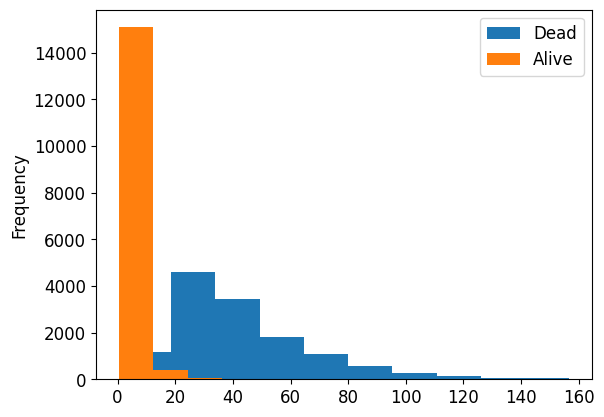
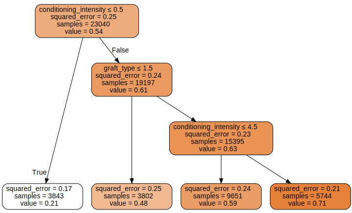

try: import kaggle_hct_survival
except:
!pip install git+https://github.com/ozpau/kaggle_hct_survival.gittree_baseline
Simple tree baseline
train = pd.read_csv(path/"train.csv", index_col=0)
test = pd.read_csv(path/"test.csv", index_col=0)
desc = pd.read_csv(path/"data_dictionary.csv", index_col=0).T
sample_sub = pd.read_csv(path/"sample_submission.csv", index_col=0)
train.shape, test.shape((28800, 59), (3, 57))It appears that there are 58 columns in the testing data. One of them is the target variable, but what is the other one?
ys = train.columns.difference(test.columns)
ysIndex(['efs', 'efs_time'], dtype='object')What are these columns for?
desc[ys].T| description | type | values | |
|---|---|---|---|
| variable | |||
| efs | Event-free survival | Categorical | ['Event' 'Censoring'] |
| efs_time | Time to event-free survival, months | Numerical | NaN |
dep_vars = ["efs", "efs_time"]sample_sub.columnsIndex(['prediction'], dtype='object')From the dataset description: > The primary outcome of interest is event-free survival, represented by the variable efs, while the time to event-free survival is captured by the variable efs_time. These two variables together encode the target for a censored time-to-event analysis.
https://www.cancer.gov/publications/dictionaries/cancer-terms/def/event-free-survival
event-free survival
In cancer, the length of time after primary treatment for a cancer ends that the patient remains free of certain complications or events that the treatment was intended to prevent or delay. These events may include the return of the cancer or the onset of certain symptoms, such as bone pain from cancer that has spread to the bone. In a clinical trial, measuring the event-free survival is one way to see how well a new treatment works. Also called EFS.
So, here’s a picture: we have a treatment and we observe a population of patients.
For some of the patients, they live normally, but others face events. When a patient faces an event, we can record the time between treatment and event.
But for patients that haven’t experienced event, we can’t compute the time between treatment and event. I suppose there could be two cases. One is that the patient is still alive and haven’t experienced an event. And another is that the patient is deceased but for an unrelated cause (for example, a car accident).
So, what we want to know is would we be able to observe an event or not? In other words, would the treatment benefit the patient?
Naturally, for testing dataset, if treatment has been administered recently, it is reasonable to expect that we shouldn’t have had observed any events yet. So I suspect that the testing dataset consists of patients with treatment dates sampled uniformly across all available treatment dates.
time_vars = ['year_hct', 'donor_age', 'age_at_hct']
train[time_vars].describe()| year_hct | donor_age | age_at_hct | |
|---|---|---|---|
| count | 28800.000000 | 26992.000000 | 28800.000000 |
| mean | 2015.179444 | 42.511591 | 38.663162 |
| std | 3.153914 | 15.251434 | 21.147581 |
| min | 2008.000000 | 18.010000 | 0.044000 |
| 25% | 2013.000000 | 28.447000 | 19.539000 |
| 50% | 2016.000000 | 40.063000 | 41.006000 |
| 75% | 2018.000000 | 56.131500 | 55.965250 |
| max | 2020.000000 | 84.800000 | 73.726000 |
test[time_vars]| year_hct | donor_age | age_at_hct | |
|---|---|---|---|
| ID | |||
| 28800 | 2016 | NaN | 9.942 |
| 28801 | 2008 | 72.29 | 43.705 |
| 28802 | 2019 | NaN | 33.997 |
Preprocess the data
Let’s join testing and training data for convenience into one dataframe and let’s also preprocess categorical and missing data
pvalid = 0.2
#train.loc[len(train)Understanding outcomes
sample_sub.head().T| ID | 28800 | 28801 | 28802 |
|---|---|---|---|
| prediction | 0.5 | 0.5 | 0.5 |
vars_submit = ["efs"]
train[vars_submit].sample(5).T| ID | 18932 | 21280 | 27880 | 15692 | 25416 |
|---|---|---|---|---|---|
| efs | 0.0 | 1.0 | 1.0 | 1.0 | 1.0 |
train[vars_submit].value_counts()efs
1.0 15532
0.0 13268
Name: count, dtype: int64Makes sense. A person either survives or not.
But there is also time to survival. Is there some masking envolved?
train.query('efs == 0')['efs_time'].plot.hist(label="Dead")
train.query('efs == 1')['efs_time'].plot.hist(label="Alive")
plt.legend()
Validation set
Lets select validation set and join all data into one dataframe for ease of use.
But first, we need to understand what kind of sampling differences are to expect from the testing dataset. - Is it going to be sampled from the same prior distribution as the testing set? - Is it going to be sampled for future patients? - Is
Scratch Work
train_conds = np.arange(len(train)) < len(train)*0.8
train_idx = np.where( train_conds)[0]
valid_idx = np.where(~train_conds)[0]
splits = (list(train_idx), list(valid_idx))
procs = [Categorify, FillMissing]
cont,cat = cont_cat_split(train, 40, dep_var=dep_vars)with warnings.catch_warnings():
warnings.simplefilter('ignore')
# debug
to = TabularPandas(train, procs, cat, cont, y_names=dep_vars, splits=splits)
#to = TabularPandas(train.drop(, procs, cat, cont, y_names=dep_vars, splits=splits)def preprocess_test_data(to):
with warnings.catch_warnings():
warnings.simplefilter('ignore')
dls = to.dataloaders()
dl = dls.test_dl(test)
return dl.dataset.itemsprocessed_test = preprocess_test_data(to)'efs' in processed_test or 'efs_time' in processed_testFalse'efs_time' in processed_test.columnsFalselist(zip(to.items.drop(columns=['efs','efs_time']).columns, processed_test.columns))[('dri_score', 'dri_score'),
('psych_disturb', 'psych_disturb'),
('cyto_score', 'cyto_score'),
('diabetes', 'diabetes'),
('hla_match_c_high', 'hla_match_c_high'),
('hla_high_res_8', 'hla_high_res_8'),
('tbi_status', 'tbi_status'),
('arrhythmia', 'arrhythmia'),
('hla_low_res_6', 'hla_low_res_6'),
('graft_type', 'graft_type'),
('vent_hist', 'vent_hist'),
('renal_issue', 'renal_issue'),
('pulm_severe', 'pulm_severe'),
('prim_disease_hct', 'prim_disease_hct'),
('hla_high_res_6', 'hla_high_res_6'),
('cmv_status', 'cmv_status'),
('hla_high_res_10', 'hla_high_res_10'),
('hla_match_dqb1_high', 'hla_match_dqb1_high'),
('tce_imm_match', 'tce_imm_match'),
('hla_nmdp_6', 'hla_nmdp_6'),
('hla_match_c_low', 'hla_match_c_low'),
('rituximab', 'rituximab'),
('hla_match_drb1_low', 'hla_match_drb1_low'),
('hla_match_dqb1_low', 'hla_match_dqb1_low'),
('prod_type', 'prod_type'),
('cyto_score_detail', 'cyto_score_detail'),
('conditioning_intensity', 'conditioning_intensity'),
('ethnicity', 'ethnicity'),
('year_hct', 'year_hct'),
('obesity', 'obesity'),
('mrd_hct', 'mrd_hct'),
('in_vivo_tcd', 'in_vivo_tcd'),
('tce_match', 'tce_match'),
('hla_match_a_high', 'hla_match_a_high'),
('hepatic_severe', 'hepatic_severe'),
('donor_age', 'donor_age'),
('prior_tumor', 'prior_tumor'),
('hla_match_b_low', 'hla_match_b_low'),
('peptic_ulcer', 'peptic_ulcer'),
('age_at_hct', 'age_at_hct'),
('hla_match_a_low', 'hla_match_a_low'),
('gvhd_proph', 'gvhd_proph'),
('rheum_issue', 'rheum_issue'),
('sex_match', 'sex_match'),
('hla_match_b_high', 'hla_match_b_high'),
('race_group', 'race_group'),
('comorbidity_score', 'comorbidity_score'),
('karnofsky_score', 'karnofsky_score'),
('hepatic_mild', 'hepatic_mild'),
('tce_div_match', 'tce_div_match'),
('donor_related', 'donor_related'),
('melphalan_dose', 'melphalan_dose'),
('hla_low_res_8', 'hla_low_res_8'),
('cardiac', 'cardiac'),
('hla_match_drb1_high', 'hla_match_drb1_high'),
('pulm_moderate', 'pulm_moderate'),
('hla_low_res_10', 'hla_low_res_10'),
('hla_match_c_high_na', 'hla_match_c_high_na'),
('hla_high_res_8_na', 'hla_high_res_8_na'),
('hla_low_res_6_na', 'hla_low_res_6_na'),
('hla_high_res_6_na', 'hla_high_res_6_na'),
('hla_high_res_10_na', 'hla_high_res_10_na'),
('hla_match_dqb1_high_na', 'hla_match_dqb1_high_na'),
('hla_nmdp_6_na', 'hla_nmdp_6_na'),
('hla_match_c_low_na', 'hla_match_c_low_na'),
('hla_match_drb1_low_na', 'hla_match_drb1_low_na'),
('hla_match_dqb1_low_na', 'hla_match_dqb1_low_na'),
('hla_match_a_high_na', 'hla_match_a_high_na'),
('donor_age_na', 'donor_age_na'),
('hla_match_b_low_na', 'hla_match_b_low_na'),
('hla_match_a_low_na', 'hla_match_a_low_na'),
('hla_match_b_high_na', 'hla_match_b_high_na'),
('comorbidity_score_na', 'comorbidity_score_na'),
('karnofsky_score_na', 'karnofsky_score_na'),
('hla_low_res_8_na', 'hla_low_res_8_na'),
('hla_match_drb1_high_na', 'hla_match_drb1_high_na'),
('hla_low_res_10_na', 'hla_low_res_10_na')]processed_test.columnsIndex(['dri_score', 'psych_disturb', 'cyto_score', 'diabetes',
'hla_match_c_high', 'hla_high_res_8', 'tbi_status', 'arrhythmia',
'hla_low_res_6', 'graft_type', 'vent_hist', 'renal_issue',
'pulm_severe', 'prim_disease_hct', 'hla_high_res_6', 'cmv_status',
'hla_high_res_10', 'hla_match_dqb1_high', 'tce_imm_match', 'hla_nmdp_6',
'hla_match_c_low', 'rituximab', 'hla_match_drb1_low',
'hla_match_dqb1_low', 'prod_type', 'cyto_score_detail',
'conditioning_intensity', 'ethnicity', 'year_hct', 'obesity', 'mrd_hct',
'in_vivo_tcd', 'tce_match', 'hla_match_a_high', 'hepatic_severe',
'donor_age', 'prior_tumor', 'hla_match_b_low', 'peptic_ulcer',
'age_at_hct', 'hla_match_a_low', 'gvhd_proph', 'rheum_issue',
'sex_match', 'hla_match_b_high', 'race_group', 'comorbidity_score',
'karnofsky_score', 'hepatic_mild', 'tce_div_match', 'donor_related',
'melphalan_dose', 'hla_low_res_8', 'cardiac', 'hla_match_drb1_high',
'pulm_moderate', 'hla_low_res_10', 'hla_match_c_high_na',
'hla_high_res_8_na', 'hla_low_res_6_na', 'hla_high_res_6_na',
'hla_high_res_10_na', 'hla_match_dqb1_high_na', 'hla_nmdp_6_na',
'hla_match_c_low_na', 'hla_match_drb1_low_na', 'hla_match_dqb1_low_na',
'hla_match_a_high_na', 'donor_age_na', 'hla_match_b_low_na',
'hla_match_a_low_na', 'hla_match_b_high_na', 'comorbidity_score_na',
'karnofsky_score_na', 'hla_low_res_8_na', 'hla_match_drb1_high_na',
'hla_low_res_10_na'],
dtype='object')pd.concat([train,test]).shape, train.shape, test.shape((28803, 59), (28800, 59), (3, 57))def fill_test(): train_conds = np.arange(len(train) + len(test)) < len(train)
train_idx = np.where( train_conds)[0]
valid_idx = np.where(~train_conds)[0]
splits = (list(train_idx), list(valid_idx))
df = pd.concat([train,test]).copy()
with warnings.catch_warnings():
warnings.simplefilter('ignore')
to = TabularPandas(df, procs, cat, cont);
return to.items.iloc[len(train):].drop(columns=['efs', 'efs_time'])fill_test()
xs,y = to.train.xs,to.train.y
valid_xs,valid_y = to.valid.xs,to.valid.ym = DecisionTreeRegressor(max_leaf_nodes=4)
m.fit(xs, y);
draw_tree(m, xs, size=10, leaves_parallel=True, precision=2)
desc['conditioning_intensity']description Computed planned conditioning intensity
type Categorical
values ['RIC' nan 'NMA' 'MAC' 'TBD' 'No drugs reported'\n 'N/A, F(pre-TED) not submitted']
Name: conditioning_intensity, dtype: objectto.classes['conditioning_intensity']['#na#', 'MAC', 'N/A, F(pre-TED) not submitted', 'NMA', 'No drugs reported', 'RIC', 'TBD']to.classes['graft_type']['#na#', 'Bone marrow', 'Peripheral blood']len(preprocess_test_data(to).columns), len(m.feature_names_in_)(77, 77)df = preprocess_test_data(to)
df.reindex(columns = m.feature_names_in_)| dri_score | psych_disturb | cyto_score | diabetes | tbi_status | arrhythmia | graft_type | vent_hist | renal_issue | pulm_severe | prim_disease_hct | cmv_status | tce_imm_match | rituximab | prod_type | cyto_score_detail | conditioning_intensity | ethnicity | year_hct | obesity | mrd_hct | in_vivo_tcd | tce_match | hepatic_severe | prior_tumor | peptic_ulcer | gvhd_proph | rheum_issue | sex_match | race_group | hepatic_mild | tce_div_match | donor_related | melphalan_dose | cardiac | pulm_moderate | hla_match_c_high_na | hla_high_res_8_na | hla_low_res_6_na | hla_high_res_6_na | hla_high_res_10_na | hla_match_dqb1_high_na | hla_nmdp_6_na | hla_match_c_low_na | hla_match_drb1_low_na | hla_match_dqb1_low_na | hla_match_a_high_na | donor_age_na | hla_match_b_low_na | hla_match_a_low_na | hla_match_b_high_na | comorbidity_score_na | karnofsky_score_na | hla_low_res_8_na | hla_match_drb1_high_na | hla_low_res_10_na | hla_match_c_high | hla_high_res_8 | hla_low_res_6 | hla_high_res_6 | hla_high_res_10 | hla_match_dqb1_high | hla_nmdp_6 | hla_match_c_low | hla_match_drb1_low | hla_match_dqb1_low | hla_match_a_high | donor_age | hla_match_b_low | age_at_hct | hla_match_a_low | hla_match_b_high | comorbidity_score | karnofsky_score | hla_low_res_8 | hla_match_drb1_high | hla_low_res_10 | |
|---|---|---|---|---|---|---|---|---|---|---|---|---|---|---|---|---|---|---|---|---|---|---|---|---|---|---|---|---|---|---|---|---|---|---|---|---|---|---|---|---|---|---|---|---|---|---|---|---|---|---|---|---|---|---|---|---|---|---|---|---|---|---|---|---|---|---|---|---|---|---|---|---|---|---|---|---|---|
| ID | |||||||||||||||||||||||||||||||||||||||||||||||||||||||||||||||||||||||||||||
| 28800 | 8 | 1 | 0 | 1 | 1 | 1 | 1 | 1 | 1 | 1 | 7 | 1 | 0 | 1 | 1 | 0 | 0 | 3 | 9 | 1 | 0 | 2 | 0 | 1 | 1 | 1 | 12 | 1 | 3 | 4 | 1 | 0 | 3 | 2 | 1 | 1 | 2 | 2 | 1 | 1 | 2 | 1 | 1 | 1 | 1 | 1 | 1 | 2 | 1 | 1 | 1 | 1 | 1 | 1 | 1 | 1 | 2.0 | 8.0 | 6.0 | 6.0 | 10.0 | 2.0 | 6.0 | 2.0 | 2.0 | 2.0 | 2.0 | 40.153999 | 2.0 | 9.942 | 2.0 | 2.0 | 0.0 | 90.0 | 8.0 | 2.0 | 10.0 |
| 28801 | 3 | 1 | 2 | 1 | 7 | 1 | 2 | 1 | 1 | 1 | 3 | 1 | 8 | 1 | 2 | 2 | 1 | 3 | 1 | 1 | 2 | 1 | 4 | 1 | 1 | 1 | 14 | 1 | 1 | 2 | 1 | 4 | 2 | 2 | 1 | 3 | 1 | 1 | 1 | 1 | 1 | 1 | 1 | 1 | 1 | 1 | 1 | 1 | 1 | 1 | 1 | 1 | 1 | 1 | 1 | 1 | 2.0 | 8.0 | 6.0 | 6.0 | 10.0 | 2.0 | 6.0 | 2.0 | 2.0 | 2.0 | 2.0 | 72.290000 | 2.0 | 43.705 | 2.0 | 2.0 | 3.0 | 90.0 | 8.0 | 2.0 | 10.0 |
| 28802 | 8 | 1 | 0 | 1 | 1 | 1 | 1 | 1 | 1 | 1 | 6 | 1 | 8 | 1 | 1 | 0 | 0 | 3 | 12 | 1 | 0 | 2 | 0 | 1 | 1 | 1 | 8 | 1 | 2 | 4 | 1 | 4 | 2 | 2 | 1 | 1 | 1 | 1 | 1 | 1 | 1 | 1 | 1 | 1 | 1 | 1 | 1 | 2 | 1 | 1 | 1 | 1 | 1 | 1 | 1 | 1 | 2.0 | 8.0 | 6.0 | 6.0 | 10.0 | 2.0 | 6.0 | 2.0 | 2.0 | 2.0 | 2.0 | 40.153999 | 2.0 | 33.997 | 2.0 | 2.0 | 0.0 | 90.0 | 8.0 | 2.0 | 10.0 |
list(zip(preprocess_test_data(to).reindex(columns = m.feature_names_in_).columns, m.feature_names_in_))[('dri_score', 'dri_score'),
('psych_disturb', 'psych_disturb'),
('cyto_score', 'cyto_score'),
('diabetes', 'diabetes'),
('tbi_status', 'tbi_status'),
('arrhythmia', 'arrhythmia'),
('graft_type', 'graft_type'),
('vent_hist', 'vent_hist'),
('renal_issue', 'renal_issue'),
('pulm_severe', 'pulm_severe'),
('prim_disease_hct', 'prim_disease_hct'),
('cmv_status', 'cmv_status'),
('tce_imm_match', 'tce_imm_match'),
('rituximab', 'rituximab'),
('prod_type', 'prod_type'),
('cyto_score_detail', 'cyto_score_detail'),
('conditioning_intensity', 'conditioning_intensity'),
('ethnicity', 'ethnicity'),
('year_hct', 'year_hct'),
('obesity', 'obesity'),
('mrd_hct', 'mrd_hct'),
('in_vivo_tcd', 'in_vivo_tcd'),
('tce_match', 'tce_match'),
('hepatic_severe', 'hepatic_severe'),
('prior_tumor', 'prior_tumor'),
('peptic_ulcer', 'peptic_ulcer'),
('gvhd_proph', 'gvhd_proph'),
('rheum_issue', 'rheum_issue'),
('sex_match', 'sex_match'),
('race_group', 'race_group'),
('hepatic_mild', 'hepatic_mild'),
('tce_div_match', 'tce_div_match'),
('donor_related', 'donor_related'),
('melphalan_dose', 'melphalan_dose'),
('cardiac', 'cardiac'),
('pulm_moderate', 'pulm_moderate'),
('hla_match_c_high_na', 'hla_match_c_high_na'),
('hla_high_res_8_na', 'hla_high_res_8_na'),
('hla_low_res_6_na', 'hla_low_res_6_na'),
('hla_high_res_6_na', 'hla_high_res_6_na'),
('hla_high_res_10_na', 'hla_high_res_10_na'),
('hla_match_dqb1_high_na', 'hla_match_dqb1_high_na'),
('hla_nmdp_6_na', 'hla_nmdp_6_na'),
('hla_match_c_low_na', 'hla_match_c_low_na'),
('hla_match_drb1_low_na', 'hla_match_drb1_low_na'),
('hla_match_dqb1_low_na', 'hla_match_dqb1_low_na'),
('hla_match_a_high_na', 'hla_match_a_high_na'),
('donor_age_na', 'donor_age_na'),
('hla_match_b_low_na', 'hla_match_b_low_na'),
('hla_match_a_low_na', 'hla_match_a_low_na'),
('hla_match_b_high_na', 'hla_match_b_high_na'),
('comorbidity_score_na', 'comorbidity_score_na'),
('karnofsky_score_na', 'karnofsky_score_na'),
('hla_low_res_8_na', 'hla_low_res_8_na'),
('hla_match_drb1_high_na', 'hla_match_drb1_high_na'),
('hla_low_res_10_na', 'hla_low_res_10_na'),
('hla_match_c_high', 'hla_match_c_high'),
('hla_high_res_8', 'hla_high_res_8'),
('hla_low_res_6', 'hla_low_res_6'),
('hla_high_res_6', 'hla_high_res_6'),
('hla_high_res_10', 'hla_high_res_10'),
('hla_match_dqb1_high', 'hla_match_dqb1_high'),
('hla_nmdp_6', 'hla_nmdp_6'),
('hla_match_c_low', 'hla_match_c_low'),
('hla_match_drb1_low', 'hla_match_drb1_low'),
('hla_match_dqb1_low', 'hla_match_dqb1_low'),
('hla_match_a_high', 'hla_match_a_high'),
('donor_age', 'donor_age'),
('hla_match_b_low', 'hla_match_b_low'),
('age_at_hct', 'age_at_hct'),
('hla_match_a_low', 'hla_match_a_low'),
('hla_match_b_high', 'hla_match_b_high'),
('comorbidity_score', 'comorbidity_score'),
('karnofsky_score', 'karnofsky_score'),
('hla_low_res_8', 'hla_low_res_8'),
('hla_match_drb1_high', 'hla_match_drb1_high'),
('hla_low_res_10', 'hla_low_res_10')]def predict(to):
df = preprocess_test_data(to).reindex(columns = m.feature_names_in_)
df = pd.DataFrame({"prediction": m.predict(df)}, index=df.index)
df.index.name = "ID"
return dfdf = predict(to)
df.to_csv("var/submission.csv")!head {path}/sample_submission.csvID,prediction
28800,0.5
28801,0.5
28802,0.5